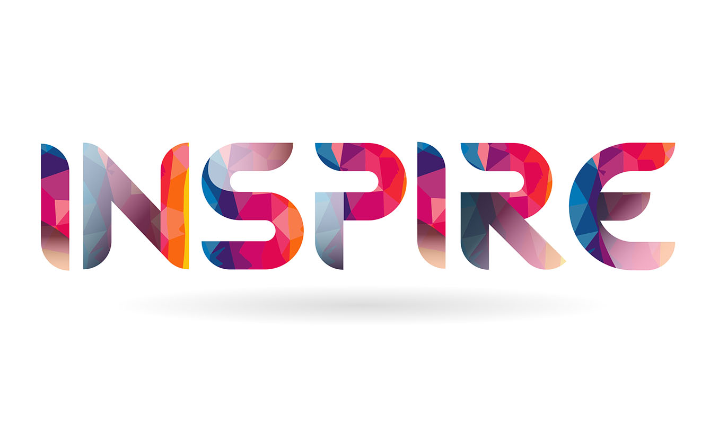
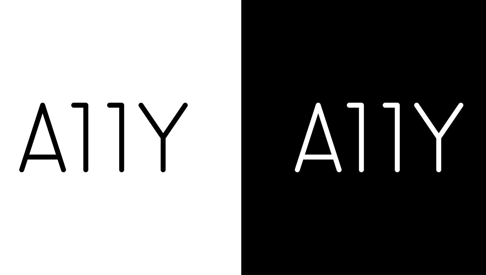
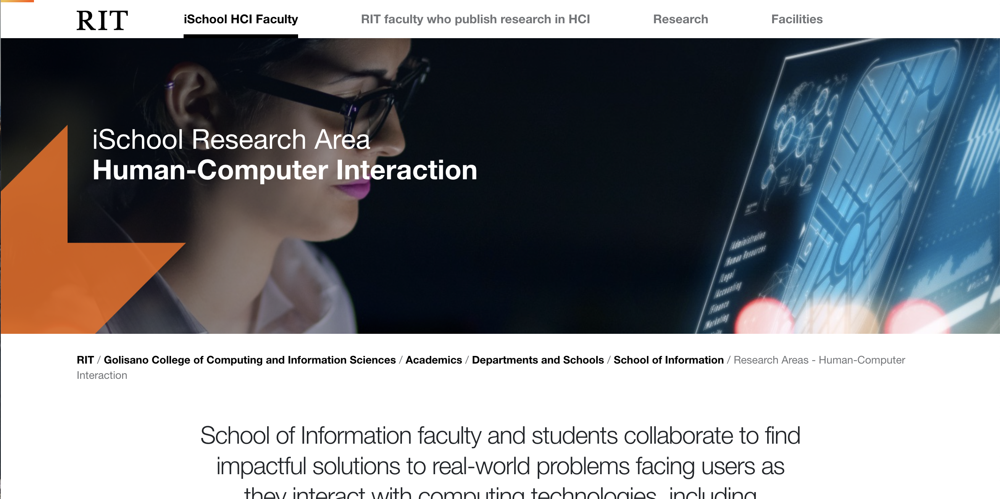
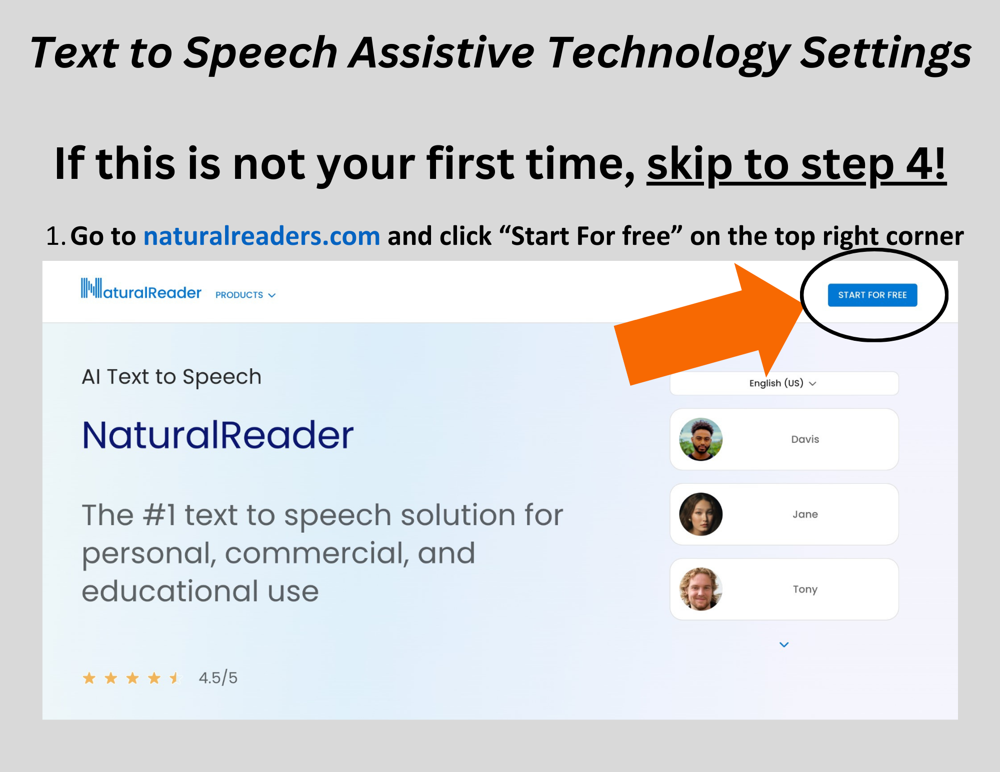

About Yugo
As a passionate Human-Computer Interaction (HCI) researcher and aspiring M.S. candidate, I specialize in bridging accessibility and innovation through technology. I am currently pursuing my M.S. in HCI at RIT, where I explore user-centered design, usability testing, and emerging technologies such as generative AI. My research focuses on improving digital accessibility, including alt-text generation for scientific articles and facilitating collaborative platforms for disability faculty and staff. I currently am working on my capstone project which aims to bridge the communications gap between hearing and DHH people by utilizing speech recognition. You can learn more about it here.
With a diverse professional background across research, communications and marketing, web design, community engagement, and customer service roles, I bring technical skills and research expertise, such as user studies, focus groups, accessibility design, and critical analysis. Global Perspective: Multilingual proficiency in English and Japanese, combined with international experience in education and customer service.
I thrive at the intersection of technology, inclusivity, and human experience, driving projects that make a tangible impact on diverse communities. Let’s connect if you share a passion for accessible and human-centered technologies.
On Going Projects
INSPIRE
INSPIRE aims to support faculty with disability in research and teaching at RIT. I designed and buillt a website using HTML and design tool RIT offers along the branding guideline.
Generative AI in K-12
Currently building the workshop and poster plans for K-12 teachers specifically underfunded school to have free resource plus generative AI to imporve the education opportunityies for students.
A11y: Improving Alternative Texts for Science Figures With Generative AI
This is the AWARE-AI NSF research and I lead this project. My team is designing studies investigating the effective
Usage of generative AI among MLL students
This is part of the research with Prof. Beaton and supporting a focus group dat collection for multi lingual language larners using generative AI.
Completed Projects & Publications
RIT HCI Research Website
I revamped and updated the design and contents of HCI research page for the School of Information while I was a Coordinator of Communications and Student Expeirence.
The iSchool Tour
This video was published for perspective students and families to have an idea about the School of Information while they participated in the virtual open hour during pandemic. Scipts, recording and edits are made by me.
The iSchool Graduation Video
This video was published to celebrate class of 2022. Recorded half of the clips prior to the commencement and students are shared thier story on the day walking the stage. Many international families who could not be in person watched this video as well.
The iSchool Recruitment Page
This web project aimed to recruit faculty, including the director of the department. Information was collected from current faculty and staff, and then i designed following the RIT branding guideline.

Caption Mask Promotion video from ImagineRIT
This was recorded during ImagineRIT featuring the student project in the iSchool. They were invited some local hospitals for presentation and had amazing contruibution to the world
Text-to-Speech instruction for Disability Services
The goal of this project was reducing the number of human reader needs to save resources for others as testing accomodation needs was increasing dramatically. Text-to-speech with natural reader became the common resources for students in Disability Services Office (DSO)
More Work or Collaborations with Yugo
I am happy to answer any questions about my work. Feel free to email me directly or fill out the form below.